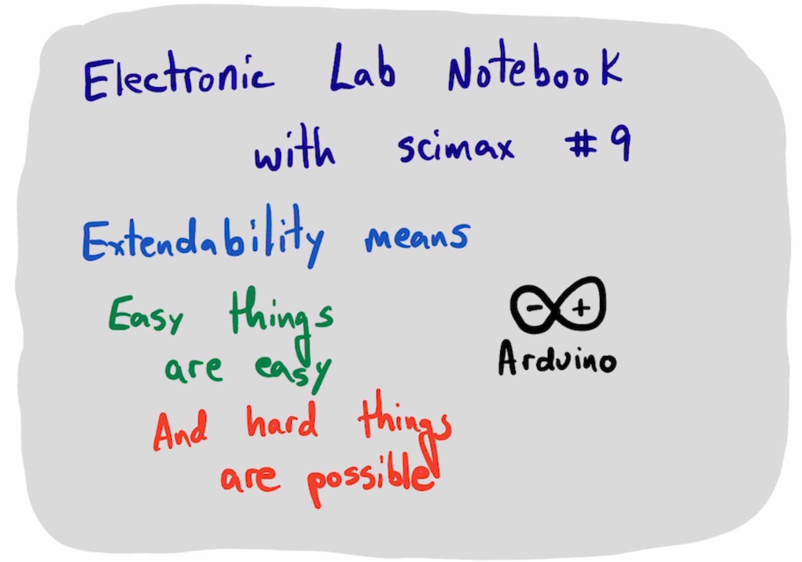
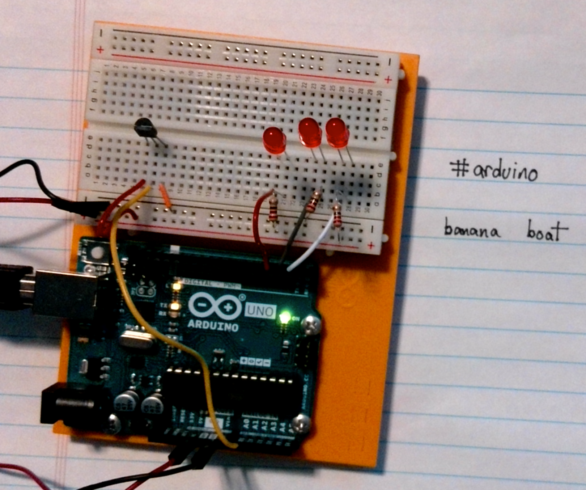

Electronic Lab Notebook for Arduino devices with scimax
Table of Contents

arduino-cli board list
(load-file "scimax-ob-arduino.el")
1. Setup the instrument
const int sensorPin = A0;
const float baselineTemp = 25.0;
unsigned long time;
void setup(){
Serial.begin(9600);
for(int pinNumber = 2; pinNumber<5; pinNumber++){
pinMode(pinNumber, OUTPUT);
digitalWrite(pinNumber, LOW);
}
Serial.println("time(s), sensor value, volts, degC, state");
}
void loop(){
int sensorVal = analogRead(sensorPin);
time = micros();
Serial.print(time / 1e6);
Serial.print(", ");
Serial.print(sensorVal);
float voltage = (sensorVal / 1024.0) * 5.0; // convert to voltage
Serial.print(", ");
Serial.print(voltage);
Serial.print(", ");
float temperature = (voltage - 0.5) * 100;
Serial.print(temperature);
if(temperature < baselineTemp + 2){
digitalWrite(2, LOW);
digitalWrite(3, LOW);
digitalWrite(4, LOW);
Serial.print(", 0");
}
else if (temperature >= baselineTemp + 2 && temperature < baselineTemp + 4){
digitalWrite(2, HIGH);
digitalWrite(3, LOW);
digitalWrite(4, LOW);
Serial.print(", 1");
}
else if (temperature >= baselineTemp + 4 && temperature < baselineTemp + 6){
digitalWrite(2, HIGH);
digitalWrite(3, HIGH);
digitalWrite(4, LOW);
Serial.print(", 2");
}
else if (temperature >= baselineTemp + 6){
digitalWrite(2, HIGH);
digitalWrite(3, HIGH);
digitalWrite(4, HIGH);
Serial.print(", 3");
}
// I found each loop takes about 0.002 microseconds leading to 0.1 second
// drift over 100 seconds. With this setting, we are at 99.99 after 50 steps.
Serial.println();
delay(1998);
}
2. Save an image
{a> :file 2024-06-25-19-46-27.aiff <a}

3. Save a video
{v> :file 2024-06-25-19-44-44.mov :note "example of how the device works" <v}
4. Save some data
(serial-term "/dev/cu.usbmodem143101" 9600)
Run this to save the data.
(with-temp-file "data.csv"
(insert
(with-current-buffer "/dev/cu.usbmodem143101"
(buffer-string))))
But it also blocks uploading, so kill it like
(kill-buffer "/dev/cu.usbmodem143101")
head data.csv
import pandas as pd
df = pd.read_csv('data.csv', skiprows=1, names=['time', 'sensor', 'volts', 'degC', 'state'])
df
df.plot(x='time', y='degC')